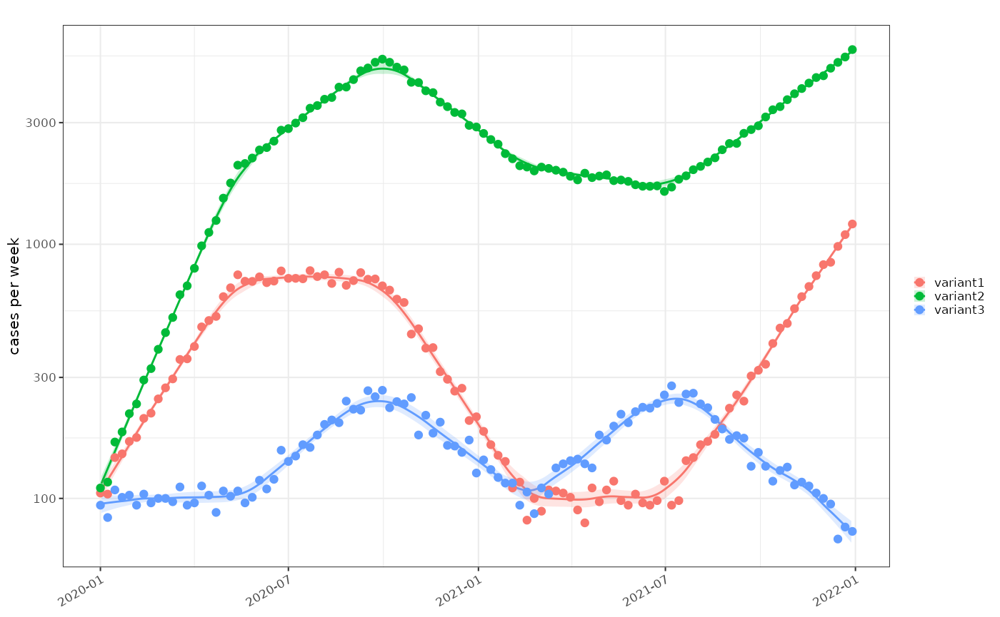
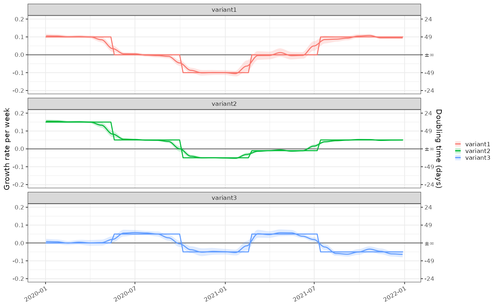

- TODO change .test_data to be a regular data frame and give example of the conversion to the timeseries.
- have a date based data frame as input.
Poisson model
- Absolute counts
data = .test_data()
tmp = data %>% dplyr::select(-r,-rate) %>% poisson_locfit_model(window=7, deg = 2)
ggplot(tmp,ggplot2::aes(x=time,y=incidence.0.5, ymin=incidence.0.025, ymax=incidence.0.975))+
ggplot2::geom_line()+
ggplot2::geom_ribbon(alpha=0.2)+
ggplot2::geom_point(mapping=ggplot2::aes(x=time,y=count), data=data, colour="red",inherit.aes = FALSE)+
ggplot2::geom_line(mapping=ggplot2::aes(x=time,y=rate), data=data, colour="red",inherit.aes = FALSE)
- Absolute growth rate
ggplot(tmp,ggplot2::aes(x=time,y=growth.0.5, ymin=growth.0.025, ymax=growth.0.975))+
ggplot2::geom_line()+ggplot2::geom_ribbon(alpha=0.2)+
ggplot2::geom_line(mapping=ggplot2::aes(x=time,y=r), data=data, colour="red",inherit.aes = FALSE)
- Multiple classes absolute count
data2 = .test_multinomial()
tmp2 = data2 %>% dplyr::select(-r,-rate) %>% dplyr::group_by(class) %>% dplyr::group_modify(poisson_locfit_model, window=7, deg = 1)
#> Warning: ! Removing unsupported column(s):
#> • proportion, proportion.obs, relative.r
#> • Did you mean to group beforehand?
#> This warning is displayed once per session.
ggplot(tmp2,ggplot2::aes(x=time,y=incidence.0.5, ymin=incidence.0.025, ymax=incidence.0.975, colour=class, group=class))+
ggplot2::geom_line()+
ggplot2::geom_ribbon(alpha=0.2, color=NA)+
ggplot2::geom_point(mapping=ggplot2::aes(x=time,y=count, color=class), data=data2,inherit.aes = FALSE)+
scale_y_log1p()
- Multiple classes absolute growth rate
ggplot(tmp2,ggplot2::aes(x=time,y=growth.0.5, ymin=growth.0.025, ymax=growth.0.975,colour=class,groups=class))+
ggplot2::geom_line()+ggplot2::geom_ribbon(alpha=0.2, color=NA)+
ggplot2::geom_line(mapping=ggplot2::aes(x=time,y=r, colour=class), data=data2,inherit.aes = FALSE)+ggplot2::facet_wrap(dplyr::vars(class), ncol=1)
One versus others binomial model
- Relative growth rate
#devtools::load_all()
# This will reinterpret total to be the total of positives
tmp3 = data2 %>%
dplyr::group_by(time) %>%
dplyr::mutate(denom = sum(count)) %>%
dplyr::group_by(class) %>%
dplyr::group_modify(proportion_locfit_model, window=14, deg = 2)
#> Warning: ! Removing unsupported column(s):
#> • r, rate, proportion, proportion.obs, relative.r
#> • Did you mean to group beforehand?
#> This warning is displayed once per session.
ggplot(tmp3,ggplot2::aes(x=time,y=relative.growth.0.5, ymin=relative.growth.0.025, ymax=relative.growth.0.975,colour=class,group=class))+
ggplot2::geom_line()+
ggplot2::geom_ribbon(alpha=0.2, color=NA)+
ggplot2::geom_line(mapping=ggplot2::aes(x=time,y=relative.r, colour=class), data=data2, inherit.aes = FALSE)+
ggplot2::facet_wrap(dplyr::vars(class), ncol=1)
- Absolute proportions
ggplot(tmp3,ggplot2::aes(x=time,y=proportion.0.5, ymin=proportion.0.025, ymax=proportion.0.975,colour=class,group=class))+
ggplot2::geom_point(mapping=ggplot2::aes(x=time,y=proportion.obs, colour=class), data=data2, inherit.aes = FALSE, size = 0.5)+
ggplot2::geom_line()+
ggplot2::geom_ribbon(alpha=0.2, color=NA)+
ggplot2::facet_wrap(dplyr::vars(class), ncol=1)
#> Warning in max(ids, na.rm = TRUE): no non-missing arguments to max; returning
#> -Inf
Multinomial model
- Absolute proportions only
# we don;t need to calculate the denominator as it is done automatically by the
tmp4 = data2 %>% multinomial_nnet_model()
#> Warning: ! Removing unsupported column(s):
#> • r, rate, denom, proportion, proportion.obs, relative.r
#> • Did you mean to group beforehand?
#> This warning is displayed once per session.
#> # weights: 30 (18 variable)
#> initial value 333433.224060
#> iter 10 value 166609.451201
#> iter 20 value 164615.248108
#> final value 164043.567578
#> converged
ggplot(tmp4,ggplot2::aes(x=time,y=proportion.0.5, colour=class,group=class))+
ggplot2::geom_point(mapping=ggplot2::aes(x=time,y=proportion.obs, colour=class), data=data2, inherit.aes = FALSE, size = 0.5)+
ggplot2::geom_line()+
ggplot2::facet_wrap(dplyr::vars(class), ncol=1)
GLM poisson model
- Spline currently only good for incidence
tmp5 = data %>% poisson_glm_model(window=7)
#> Warning: ! Removing unsupported column(s):
#> • r, rate
#> • Did you mean to group beforehand?
#> This warning is displayed once per session.
ggplot(tmp5,ggplot2::aes(x=time,y=incidence.0.5, ymin=incidence.0.025, ymax=incidence.0.975))+
ggplot2::geom_line()+
ggplot2::geom_ribbon(alpha=0.2)+
ggplot2::geom_point(mapping=ggplot2::aes(x=time,y=count), data=data, colour="red",inherit.aes = FALSE)+
ggplot2::geom_line(mapping=ggplot2::aes(x=time,y=rate), data=data, colour="red",inherit.aes = FALSE)
GLM poisson model
- Absolute proportions only
# we don;t need to calculate the denominator as it is done automatically by the
tmp6 = data2 %>%
dplyr::group_by(time) %>%
dplyr::mutate(denom = sum(count)) %>%
dplyr::group_by(class) %>%
dplyr::group_modify(proportion_glm_model, window=14, deg = 2)
ggplot(tmp6,ggplot2::aes(x=time,y=proportion.0.5, colour=class,group=class))+
ggplot2::geom_point(mapping=ggplot2::aes(x=time,y=proportion.obs, colour=class), data=data2, inherit.aes = FALSE, size = 0.5)+
ggplot2::geom_line()+
ggplot2::facet_wrap(dplyr::vars(class), ncol=1)